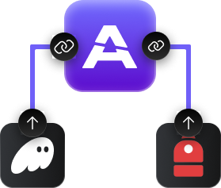
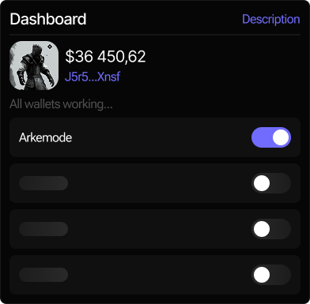
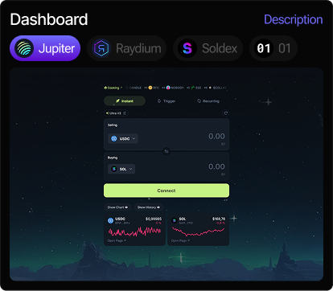
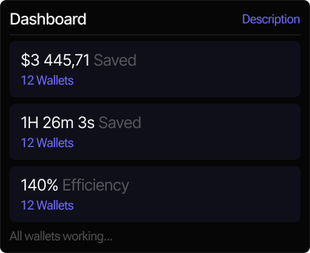

User lands on arkenocore.com and is presented with a simple interface to connect a wallet.

2
Connect Wallet(s)
Users can connect via Phantom, Backpack, or manually with a private key. Multi-wallet
connections are supported.

3
Access the Dashboard
Upon connection, the user is taken to the main dashboard showing: Wallets, Connection status,
spec. activation toggle
You have successfully activated Arkeno mode
4
Activate Arkemode
With one click, the user activates Arkemode. From this point on, all outgoing transactions are
routed through Arkeno Core.

5
Continue Normal Use
User can continue using other dApps, DEXs, staking platforms, etc.

6
Monitor Performance
The dashboard provides detailed stats on: Execution times,
Route comparison (normal vs Arkeno), Fee savings
Reviews
@CryptoNomisd
Early Power
User
Personal Result
Was testing Arkeno from day one. Speed is unreal — transactions hit in seconds, even when the
network's jammed. It's now part of every trade I do.
Using since early beta (~2 months)
@SolSapers
Multi-Wallet
Operator
Trader Insight
Arkemode is always on for me. I route through 4 wallets and never touch settings. It just works —
fast and clean.
Joined ~2 weeks ago
@Degenqueenish
Test Group
Member
Real Feedback
Didn't think a routing tool would change much… but I literally haven't had a stuck transaction since
switching. Zero failures. Love that.
Using for ~ 1 month
Roadmap
1
Q2 2025 — Core Launch
Brand launch + website
Twitter established: @ArkenoCore
MVP routing engine completed
Wallet connection & manual Arkemode
activation
Initial dashboard: wallets, status, activation
2
Q3 2025 — Public Alpha
Public launch of Arkeno Core in alpha mode
Onboarding of real users + feedback
collection
Telegram bot for transaction alerts &
errors
Extended dashboard analytics
First version of customizable RPC profiles
3
Q4 2025 — Infrastructure Layer
Always-On Arkemode (auto-activation on
login)
dApp API access for external integrations
Native support for staking and DEX routing
Multi-user / DAO-compatible access
Core routing layer optimization for scale
4
Q1 2026 — Network Scaling
Full public launch of Arkeno Core
Network-level optimization tracking
dApp partnerships and deeper RPC
integration
Advanced analytics & performance reporting
Developer dashboard & documentation
FAQ
1
What is Arkeno?
Arkeno is a web-based product that accelerates and stabilizes transactions on the Solana
network. It acts as an internal routing layer through which all user transactions are processed
after connecting a wallet and activating Arkemode.
2
How does Arkemode work?
Arkemode is a mode that routes your transactions through the Arkeno core system. It dynamically
selects the most efficient network path, reduces fees, and speeds up execution. It is activated
with one click and works in the background.
3
Which wallets are supported?
Users connect their wallets via private key. Any Solana-compatible wallet is supported,
including Phantom, Backpack, and others. Multiple wallet addresses can be used simultaneously.
4
What happens to my transactions after Arkemode is activated?
All outgoing transactions are automatically routed through Arkeno’s infrastructure. This doesn’t
change how you use dApps — you just get faster, more efficient transactions with no manual
adjustments.
5
Is this secure?
Arkeno does not store or control any funds — it simply routes signed transactions through its
infrastructure.
6
Do I need to configure anything after connecting?
No. Once the wallet is connected, you only need to activate Arkemode. Everything else runs
automatically in the background.